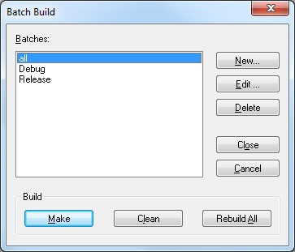

EWARM allows users to build multiple projects and configurations in a batch. To use batch
build with a Kinetis Thread Stack configuration workspace:
- Press F8
- In the Batch Build window select the configurations for batch build: Debug,
Release or all (Debug and Release)
- Choose one of the Make, or Rebuild All options at the bottom of the
window to build the selected batch configuration, or Clean to remove build
artifacts

Figure 1. EWARM Batch Build